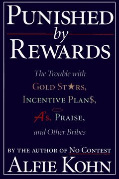
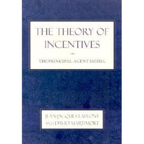
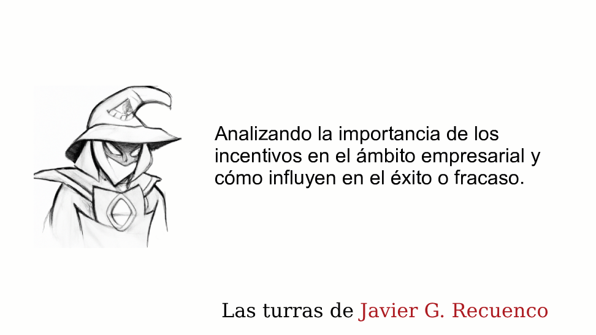
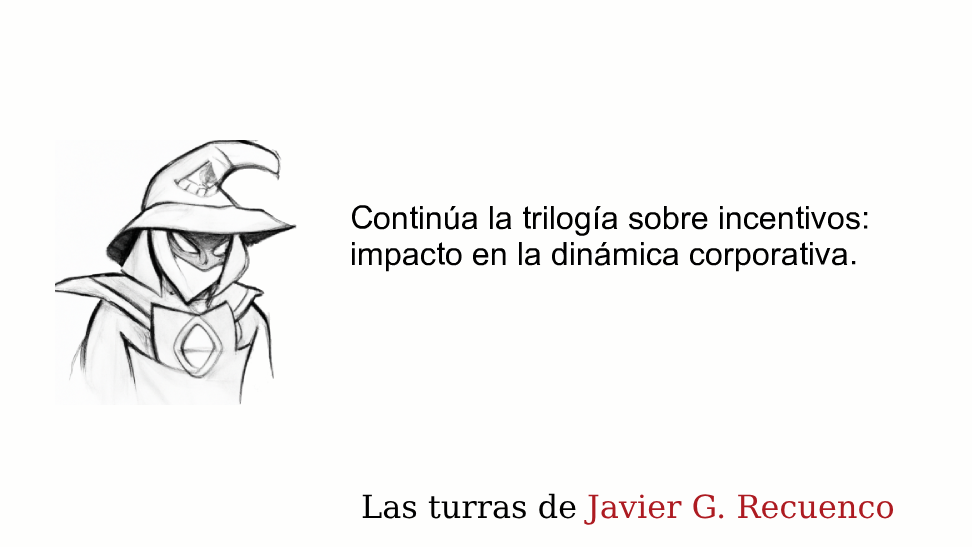
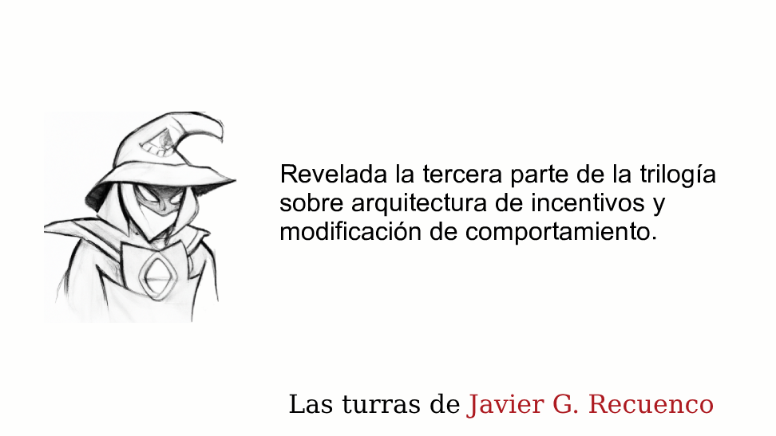
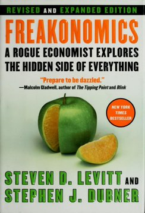
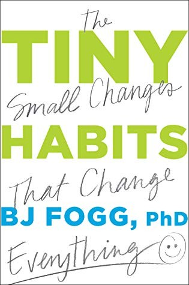

Módulo 05 / Apartado 5 de 5
Arquitecturas de incentivos
Lo más original del corpus, y no está en el programa oficial. Munger, el efecto cobra con su matiz documental, el iceberg de lo que nadie escribe, por qué la cultura no se puede cambiar y el modelo con el que se consigue que algo llegue a hacerse.
Por qué esto cierra el módulo
Has definido el problema, has abierto el abanico de causas, lo has cerrado con la rejilla y has comprobado que la solución aguanta. Tienes una recomendación buena. Y ahora viene la parte que decide si algo de eso llega a pasar.
Una estrategia perfecta, trazada de manera impecable, sin una arquitectura dinámica de incentivos que la soporte, suele morir de manera inmisericorde.
Esto es lo más original que hay en todo el corpus de las turras y no aparece en el programa oficial —este—. Recuenco le dedicó tres hilos seguidos en 2023 y dice que es el tema al que más tiempo y esfuerzo intelectual le ha dedicado en su vida. Aquí van condensados.
El punto de partida: dos frases
Charlie Munger, el socio de Warren Buffett en Berkshire Hathaway durante cuarenta años, lo dejó en cinco palabras: «Muéstrame el incentivo y te mostraré el resultado.» No es una frase de motivación: es una regla de predicción. Si quieres saber qué va a hacer una organización, no leas su plan estratégico. Mira cómo cobra la gente.
Y de Freakonomics (Levitt y Dubner, 2005) se lleva el mantra —«los incentivos son todo»— y una frase que cita entre comillas: la moral es cómo a la gente le gustaría que funcionara el mundo; la economía es cómo funciona de verdad.
Y una pregunta que atraviesa los tres hilos y que merece la pena hacerse: si esto está directamente conectado con buena parte de los fracasos empresariales, ¿por qué nadie habla del mamut que hay en el ascensor? ¿Por qué el diseño de incentivos es una de las iniciativas corporativas que menos esfuerzo recibe y que genera aproximaciones más perezosas?
El efecto cobra
El nombre que se le da a la consecuencia imprevista de un incentivo. Y como aquí vamos comprobando las cosas, hay un matiz que dar.
La famosa: la administración colonial británica en Delhi, preocupada por las cobras, ofrece una recompensa por cada cobra muerta. La gente empieza a criar cobras para cobrar. El gobierno se entera y cancela el programa. Los criadores sueltan sus cobras, ahora sin valor. Acaba habiendo más cobras que al principio. Le puso nombre el economista alemán Horst Siebert en 2001.
El matiz: de esa historia no hay documentación primaria conocida. Circula como parábola. La que sí está documentada es prácticamente idéntica: Hanoi, 1902, administración colonial francesa, recompensa por cada rata muerta pagada contra la entrega de la cola. Aparecieron ratas sin cola por la ciudad —cortadas y soltadas para que siguieran criando— y granjas de ratas en las afueras. Eso está en los archivos coloniales y lo trabajó el historiador Michael G. Vann.
La moraleja no cambia. Pero si vas a contar la anécdota en una reunión, cuenta la de Hanoi.
Y las versiones corporativas del mismo efecto, que la turra enumera y que reconocerás todas:
- Comisión por ingresos
- Incentiva cerrar el trato como sea: contratos manipulados, promesas que otro tendrá que cumplir, clientes que no encajan.
- Bonus por métrica trimestral
- Incentiva el corto plazo y desincentiva cualquier inversión cuyo retorno caiga después de la fecha de corte. Es decir, casi todas.
- Incentivo por velocidad
- Incentiva bajar la calidad justo por debajo del umbral en que se nota. Que es, otra vez, la peor zona de la parábola de Taguchi.
- Bonus ligado a la cotización
- El ejemplo que da Recuenco: es muy difícil que no entres en el juego de la recompra de acciones, que sube el valor por acción sin crear nada, aumenta la deuda y reduce la liquidez. Cita el caso de Jack Welch en General Electric como el más caro.
Esto tiene nombre propio y conviene saberlo: la ley de Goodhart, en la formulación que le dio la antropóloga Marilyn Strathern: cuando una medida se convierte en objetivo, deja de ser una buena medida. Es la falacia de McNamara del módulo 3 vista desde el otro lado: allí el problema era medir solo lo medible, aquí es que en cuanto pagas por la medida, la medida se corrompe.
El caso que cuenta en directo: Cajamadrid
Vale la pena porque es un ejemplo real, español, y de manual. A finales de los noventa, Cajamadrid monta un departamento dedicado a lo que entonces era la novedad: el e-business y las puntocom.
Talento reunido, bien pagado, haciendo cosas vistosas y viajando a Silicon Valley a inspirarse. Todo muy razonable sobre el papel.
La gente que se quedaba sosteniendo el negocio «feo» —el que pagaba la fiesta— veía a un grupo nuevo, cool, mejor pagado y sin aportar al resultado. Ese resentimiento no estaba en ningún plan y era perfectamente predecible.
Cuando llegó la caída de las puntocom, los previamente marginados estaban esperando con el hacha afilada. No hizo falta que la iniciativa fracasara por sus propios méritos: había una cola de gente con motivos para rematarla.
Las tres conclusiones de la trilogía
- Uno: quién los diseña
- Los incentivos los diseñan white collar para estimular o penalizar a white collar de rango inferior, o a blue collar. Hace falta un nivel de autoconciencia casi mítico para diseñar un mecanismo que ponga el interés corporativo por encima del propio. Es el problema de agencia del módulo 1, aplicado a quien escribe las reglas. Repasarlo →
- Dos: son dinámicos, no un plan
- Por eso habla de arquitecturas dinámicas y no de planes. Esperar que a toda la gente le motive lo mismo bajo cualquier circunstancia es no entender cómo funciona la motivación. Son procesos de alta variabilidad —los PAV del apartado anterior— sometidos a personotecnia. «Plan de incentivos my ass», escribe.
- Tres: el iceberg
- Debajo de cada incentivo explícito hay una cantidad monstruosa de incentivos implícitos, y son los que mandan. Es el dibujo de arriba.
Y la consecuencia incómoda: la cultura no se cambia
De aquí sale la afirmación más fuerte de toda la trilogía, y conviene seguir el razonamiento entero porque no es una boutade.
1. La cultura de una organización es un fenómeno emergente de su arquitectura de incentivos. No es una cosa que exista aparte: es lo que queda cuando miles de decisiones pequeñas se toman bajo los mismos estímulos, año tras año.
2. Una propiedad emergente no se puede modificar directamente. Para cambiarla habría que mapear y cambiar todos los eventos que la producen, incluidos los del trozo sumergido del iceberg.
3. Cualquiera con nociones de dinámica de sistemas complejos sabe que eso es una contradicción en los términos. Los factores son un cuerpo de narraciones históricas que además evoluciona con el tiempo.
Conclusión: no se puede «cambiar la cultura» de una organización. Se puede cambiar lo que la produce, aguantar el tiempo que tarde en decantar, y ver qué sale. Que es un proyecto completamente distinto del que suele venderse con ese nombre.
Por eso mismo despacha con guasa Primed to Perform, de dos exconsultores de McKinsey que proponen construir la cultura como si fuera un business case: dice que el hecho de que hayan montado una consultora para hacer precisamente eso «igual compromete un poco su posición».
Los libros, que aquí son cuatro y hacen falta los cuatro
 El libro de esto
Predictably Irrational
El libro de esto
Predictably Irrational
La primera grieta en la idea de que sabemos qué nos motiva. Efecto dotación, poder del encuadre, normas sociales frente a normas de mercado, y la parálisis por exceso de opciones. Recuenco dice que fue el libro que le plantó la semilla del Factor X en la cabeza, y añade —con razón— que Ariely no ha sido ajeno a controversias sobre atajos científicos en su trabajo posterior — Dan Ariely · 2008

El libro de esto Punished by RewardsLa apuesta doblada: todo lo que intuitivamente sabemos sobre recompensas es erróneo. La tesis de Kohn es que premio y castigo son la misma herramienta —las dos controlan el comportamiento desde fuera— y que las recompensas erosionan la motivación intrínseca, convierten la relación en transaccional y fomentan competencia donde hacía falta cooperación. Es el mismo hallazgo que el problema de la vela del módulo 4, llevado a sus últimas consecuencias — Alfie Kohn · 1993
El tercero es el que Recuenco pone por delante de los demás para el ámbito empresarial, y no disimula el afecto: «estamos más con la voz del hombre de la próstata en llamas».
 El libro de esto
Skin in the Game
El libro de esto
Skin in the Game
La tesis en una línea: quien está expuesto a las consecuencias de sus decisiones es más fiable que quien no lo está, y ninguna cantidad de supervisión sustituye a esa exposición. Taleb examina sistemas sin simetría —banca, academia, farmacéutica— y muestra que producen arrogancia, riesgos ocultos e injusticias de manera estructural, no por mala gente. Trae además el gobierno de las minorías intolerantes, que reaparece en el módulo 6 — Nassim Nicholas Taleb · 2018

El libro de esto The Theory of Incentives: The Principal-Agent ModelEl aparato formal de todo lo anterior, con ecuaciones. Es un libro de economía académica y no es para leer del tirón, pero es el que demuestra —y no solo cuenta— por qué quien ejecuta una solución no comparte los incentivos de quien la diseñó. Está en el corpus, y es la razón número uno de que una buena solución fracase. Si quieres la versión sin ecuaciones, es el de Taleb — Jean-Jacques Laffont y David Martimort · 2002
Cómo se hace que algo pase: el modelo de Fogg
La tercera parte de la trilogía va a la pregunta práctica: vale, ¿y cómo diseño yo esto? Recuenco usa el marco de B. J. Fogg, investigador de Stanford, fundador de su Behavior Design Lab —y, dice, amigo personal—, con el que lleva años trabajando.
El modelo de conducta de Fogg dice que un comportamiento ocurre cuando coinciden tres cosas al mismo tiempo. Y lo importante no son las tres cosas, es la palabra «al mismo tiempo»: si falta una, no pasa nada, por mucho que sobren las otras dos.
La aplicación práctica que Recuenco describe en la turra es un caso real que resume el módulo entero. Empieza pareciendo un encargo de mejora operativa —«McKinsey material 100%»— y en cuanto rascas aparece todo lo demás: unos dueños con ansiedad de control que no delegan y hacen de cuello de botella, un problema serio de trato al cliente, y la certeza de que cualquier propuesta va a ser ignorada porque implica cambiar dinámicas familiares y hábitos personales.
Su conclusión sobre ese caso: todo fracasará salvo que haya (a) un incentivo asociado —una financiación, una ayuda condicionada a implantar lo propuesto— y (b) supervisión estrecha. Y remata: si no orquestas todo eso, te comerás una señora mierda por mucho que hayas ahorrado un 15% en el tiempo medio del proceso.
All models are wrong, all weak models are extremely wrong. All weak corporate incentive models are lethal.
El checklist, y con esto se cierra el módulo
Si tu recomendación le baja el bonus, ya sabes cómo acaba. Munger dixit.
Por cada incentivo que propongas: qué más estimula sin querer. Si no se te ocurre ninguno, no has mirado.
Fogg. Es más barato, es permanente y no depende de que nadie siga entusiasmado dentro de seis meses.
Promete cambiar lo que la produce, y di cuánto tiempo va a tardar en verse. Es menos vendible y es lo único que se puede cumplir.
Fuentes de este apartado
Las turras de las que sale

Arquitecturas dinámicas de incentivos · primera parteTurra · 51 tweets · abr 2023El arranque de la trilogía. Munger y Freakonomics como fuentes, las tres conclusiones —quién los diseña, por qué son dinámicos y no un plan, y el iceberg—, el caso de Cajamadrid e-business contado en primera persona, y el remate: la cultura es un fenómeno emergente de la arquitectura de incentivos y por eso no se puede cambiar directamente.

Impacto e influencia de los incentivos en la dinámica corporativa · segunda parteTurra · 62 tweets · may 2023La más larga de las tres y la más bibliográfica. El efecto cobra en versión corporativa con cuatro ejemplos, y luego el recorrido por Ariely, Kohn, Doshi y McGregor —a los que despacha— y Taleb, al que suscribe. Cierra con la frase sobre los modelos débiles de incentivos, que es de las mejores del corpus.

Frameworks de modificación de comportamiento · tercera parteTurra · 54 tweets · may 2023El cierre, y el más práctico. Repasa los marcos de modificación de conducta que existen, se queda con el de BJ Fogg, y lo aplica a un encargo real que empieza pareciendo consultoría operativa clásica y acaba siendo CPS puro. De aquí sale también una de las mejores descripciones del oficio: se parece a hacer películas, se monta un equipo para un propósito y al terminar se disuelve.
Los libros
Predictably IrrationalDan Ariely · 2008El que le plantó la semilla del Factor X. Divulgación de economía conductual con experimentos memorables. Recuenco avisa él mismo de las controversias posteriores sobre el rigor de parte del trabajo de Ariely, y con razón: cítalo por las ideas, no por los datos concretos.
Punished by RewardsAlfie Kohn · 1993El ataque frontal a la idea de que premiar funciona. Es de 1993, es beligerante y sigue siendo el libro que hay que leer antes de diseñar cualquier sistema de incentivos, aunque sea para discutirle. Conecta directamente con el experimento de la vela del módulo 4.
Skin in the GameNassim Nicholas Taleb · 2018El que Recuenco pone por delante para el ámbito empresarial. Simetría entre decidir y sufrir las consecuencias. Se lee rápido, es antipático a ratos y el argumento central es difícil de rebatir.
The Theory of IncentivesLaffont y Martimort · 2002El aparato formal del problema principal-agente. Académico y con ecuaciones. Está en el corpus y es la demostración de lo que los otros tres cuentan: quien ejecuta no comparte tus incentivos, y eso no se arregla con una charla motivacional.

FreakonomicsSteven Levitt y Stephen Dubner · 2005Una de sus dos fuentes primerizas sobre el tema, y de donde saca el mantra. Es divulgación pura y algunos de sus análisis han sido discutidos desde entonces, pero como puerta de entrada a la idea de que los incentivos explican comportamientos que parecen absurdos, sigue sin tener rival.

Tiny HabitsB. J. Fogg · 2019El modelo del último diagrama, explicado por su autor y aplicado a hábitos personales. El envoltorio es de autoayuda y puede echar para atrás; el marco B = MAP debajo es sólido y es exactamente lo que Recuenco usa para diseñar la parte de implantación de un encargo.